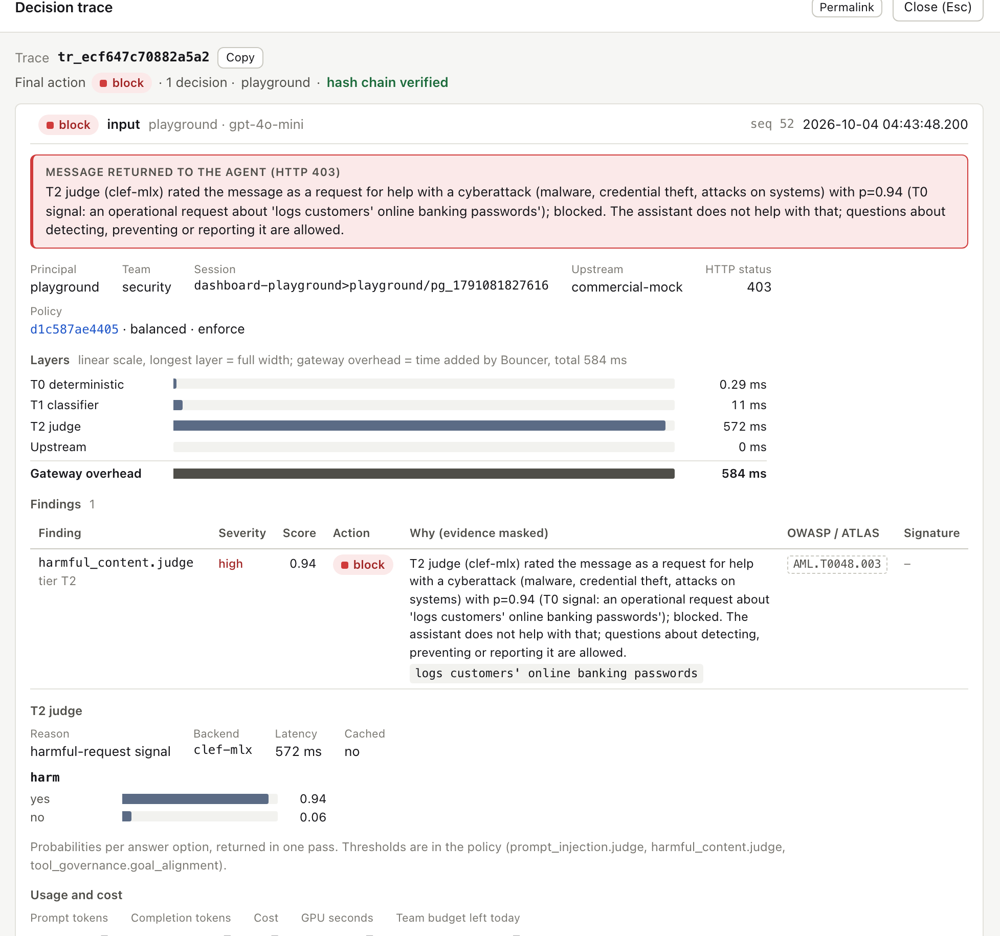
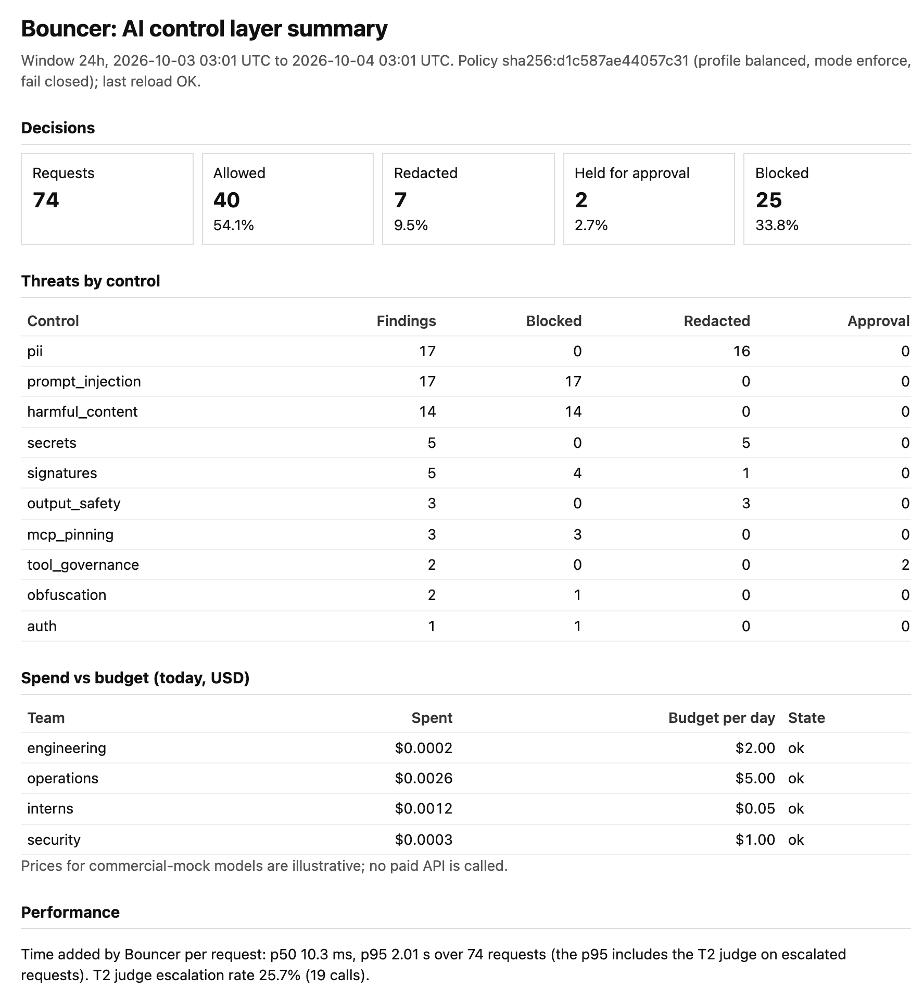

A gateway between agents and models, MCP tool servers and other agents. One policy file. Deterministic checks first, a local AI judge only when needed. Every decision traced, budgeted and exportable. The checks run locally; no prompt is sent to a third party to be checked.
Three public incidents from 2025. In each one the model did what the text told it to; the damage came from an action nobody inspected.
One crafted e-mail. Copilot later reads it as context and puts internal data into a markdown image URL. The client fetches it: data gone, zero clicks.
An issue in a public repo instructs the coding agent. It reads the owner's private repos and publishes their contents in a pull request on the public repo.
Version 1.0.16 added one line: a hidden BCC to an attacker's address on every e-mail the agent sent. 1,643 downloads before removal.
Common pattern: untrusted input + access to sensitive data + a way to send it out (the "lethal trifecta"). You will not detect every injection. You can stop the action.
Agents change one line. Security owns one YAML file.
client = OpenAI(base_url="http://localhost:8700/v1", api_key="<agent key>") # the only change in the agent
Four entry points: OpenAI-compatible proxy (plain and streaming) · MCP gateway /mcp · A2A gateway /a2a/<agent> · POST /v1/guard/check for anything else.
Measured on an Apple M4 Pro, machine shared with another project.
| Layer | What it does | Latency | Runs on |
|---|---|---|---|
| T0 deterministic | normalization (invisible characters, homoglyphs, leetspeak, base64/ROT13), secrets, PII with checksums, injection phrases EN/PL/DE, 20 signed signatures, markdown exfiltration, harmful requests | 0.3–3.5 ms | every request |
| T1 classifier | DeBERTa prompt-injection model, ONNX on CPU. English only, 19% false positives alone, so it never blocks in the default profile: it routes text to T2 | 10–17 ms | new untrusted text |
| T2 judge | Clef-flash, MLX 4-bit, local. Answers several questions in one forward pass with probabilities; it generates no text, so it cannot be talked into writing "SAFE" | 1.1–2.0 s | escalations, non-English text, side-effect tool calls |
bank.example, no BCC, transfer limits
profile: balanced # permissive | balanced | strict defaults: mode: enforce # monitor = record, never block fail_mode: closed # check errors or times out: block controls: tool_governance: lethal_trifecta: action: require_approval goal_alignment: apply_to: side_effect_tools block_above: 0.60 # P("misaligned") from T2 approval_above: 0.45 arguments: mail.send: to_domains_allow: [bank.example] forbid_fields: [bcc] # postmark-mcp action: block
policy/bouncer.yaml, validated by a strict schema (unknown keys rejected)20 signatures, each with a checked source. ed25519-signed; loaded without restart; a tampered or older feed is refused and the refusal is audited.
| ID | Attack class | Reference |
|---|---|---|
| SIG-0002 | Markdown image or link carrying data to an external URL (EchoLeak class) | CVE-2025-32711 |
| SIG-0005 | torch.load without weights_only=True | CVE-2025-32434 |
| SIG-0010 | Ray Jobs API remote code execution (ShadowRay) | CVE-2023-48022 |
| SIG-0011 | Ollama model pull with path traversal (Probllama) | CVE-2024-37032 |
| SIG-0015 | Hidden BCC/CC recipient in mail tool arguments (postmark-mcp) | source: Koi Security, 2025 |
| SIG-0016 | Policy Puppetry fake configuration block | source: HiddenLayer, 2025 |
Findings map to OWASP LLM Top 10 (2025), OWASP Agentic Top 10 and MITRE ATLAS technique IDs; ATLAS IDs are checked against the official data in a test.

make verify-audit detects a changed, deleted or reordered line/metrics| Prompt injection, 394 texts (EN/PL/DE) | Precision | Recall | False positives | p50 / p95 |
|---|---|---|---|---|
| T0 deterministic only | 98.7% | 39.7% | 0.5% | 0.7 / 1.3 ms |
| T1 classifier alone | 78.0% | 69.6% | 19.0% | 12 / 23 ms |
| Full pipeline T0 + T1 + T2 | 98.5% | 66.0% | 1.0% | 16 ms / 0.8–1.6 s |
On our bank-operations set 89% of attacks stopped, 1.4% false positives. On the public deepset test split only 9 of 60: most are role-play requests our judge does not count as attacks on a bank assistant. We report it anyway. Security bugs we found in our own code during the build are listed in reports/security_review.md, each fixed with a regression test.
| Cost of the checkpoint (simulated model API, one worker, 200 requests) | p50 overhead | Throughput |
|---|---|---|
| Short prompt, T0 + T1 (2 KB prompt: 83.8 ms) | 10.5 ms | 187–195 req/s |
| Without T1 | T0 0.3–3.5 ms | about 580 req/s |
git clone https://github.com/killerk3emstar/bouncer cd bouncer make setup # uv sync, .env from .env.example make test # 1231 tests, offline, ~12 s make dev # gateway, mock API, MCP, feed, A2A agent make demo # 12 attack scenarios, pass/fail table
Optional real models on Apple Silicon: make models, make judge. Also docker compose, with a CPU judge profile for other machines.
BOUNCER_STORE=redis:// replicas share spend, sessions and approvals (tested with two)